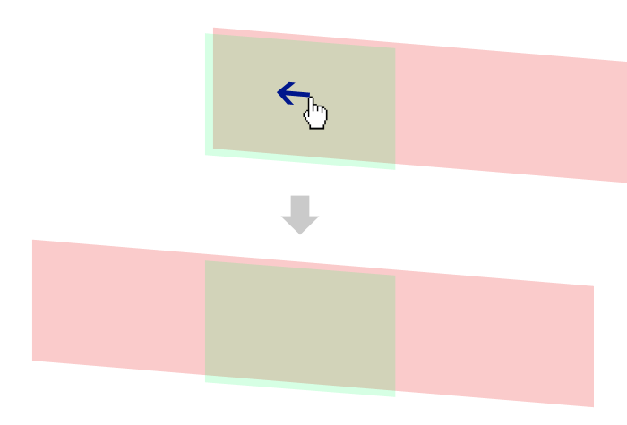

Getting Started
1. Download and load
Download code here. And load script like below.
<script src="flipsnap.js"></script>flipsnap.js is not dependent other library.
2. Write HTML
HTML set up outer element and inner element. in this case, outer element is .viewport, inner element is .flipsnap
<div class="viewport">
<div class="flipsnap">
<div class="item">1</div>
<div class="item">2</div>
<div class="item">3</div>
</div>
</div>3. Write CSS
Write CSS like below.
.viewport {
width: 320px;
overflow: hidden;
margin: 0 auto;
-webkit-transform: translateZ(0); /* Optional: When heavy at iOS6+ */
}
.flipsnap {
width: 960px; /* 320px(item width) * 3(item count) */
}
.flipsnap:after {
content: '';
display: block;
clear: both;
height: 0;
}
.item {
float: left;
width: 310px;
font-size: 50px;
text-align: center;
padding: 50px 0;
background: #EFEFEF;
border: 5px solid #999;
color: #666;
}.viewportsetoverflow:hiddenand real view width..flipsnapset additional all item width..itemis made into one row usingfloat. Probably, it or flexbox may be used(if supported browser).

4. Write JavaScript
Call Flipsnap() with CSS selector of inner element. in this case, it is .flipsnap
Flipsnap('.flipsnap');JavaScript code is only one line! You can set options and bind event. see also document and demo.
5. Complete!
